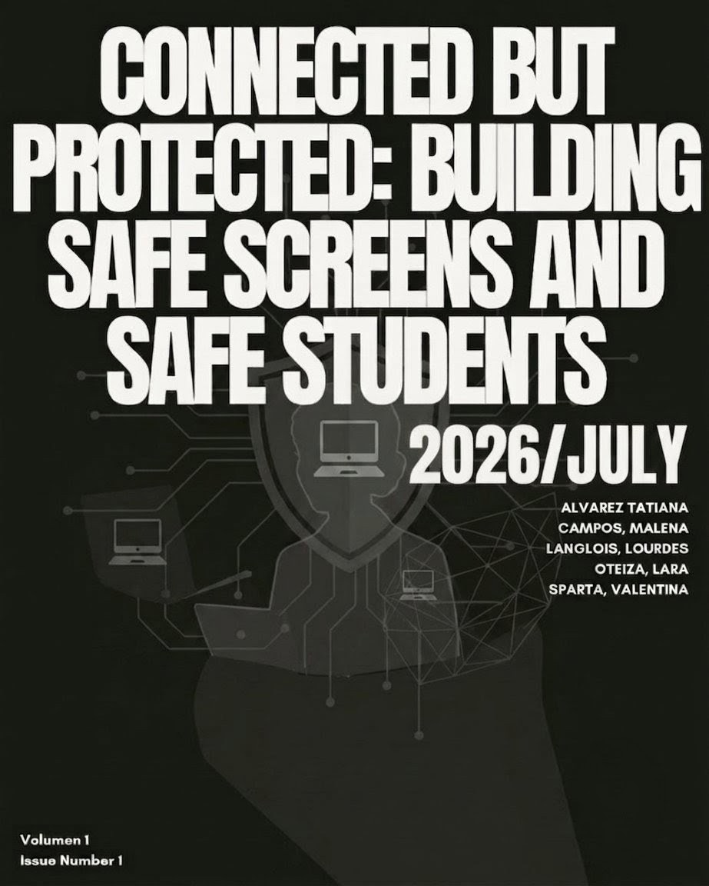
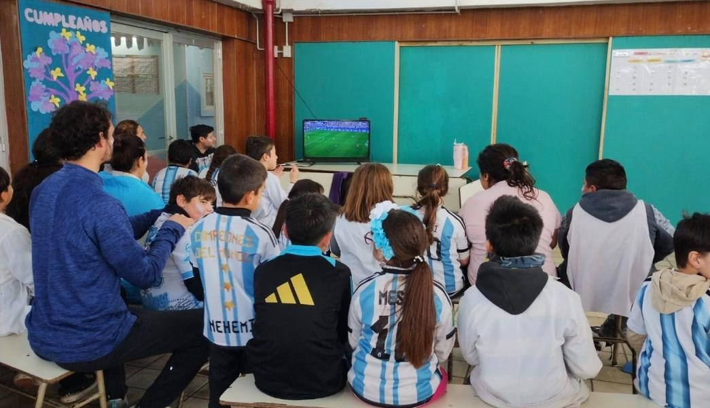
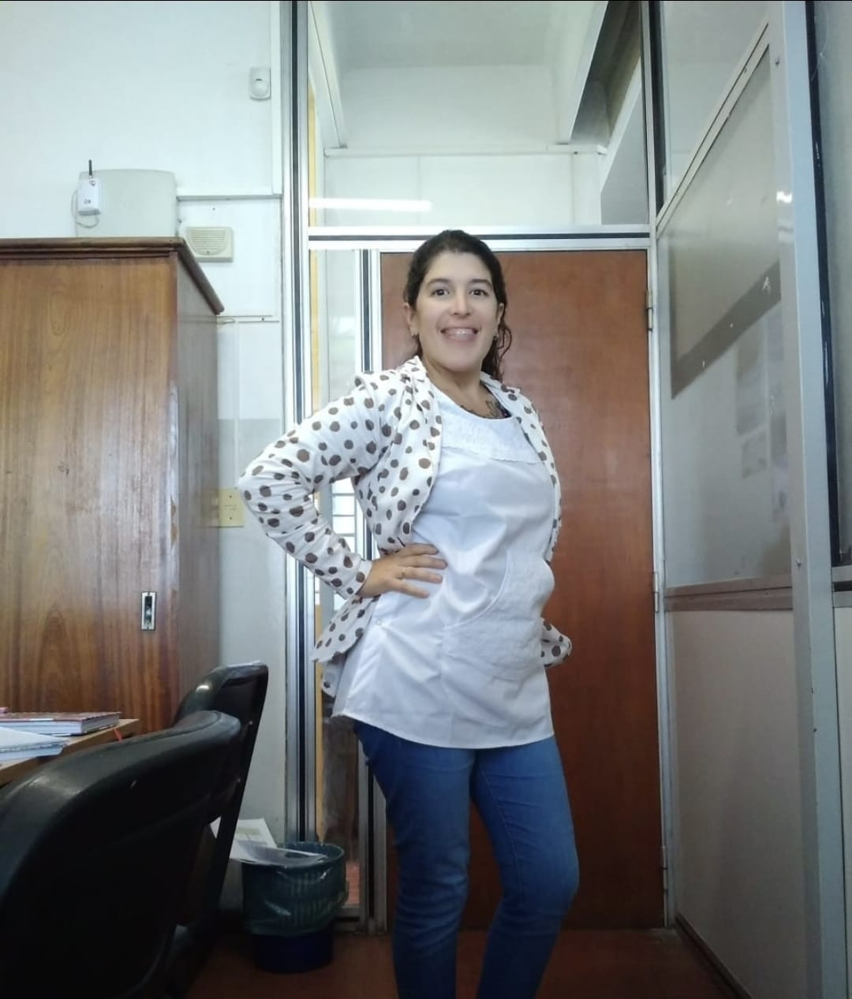
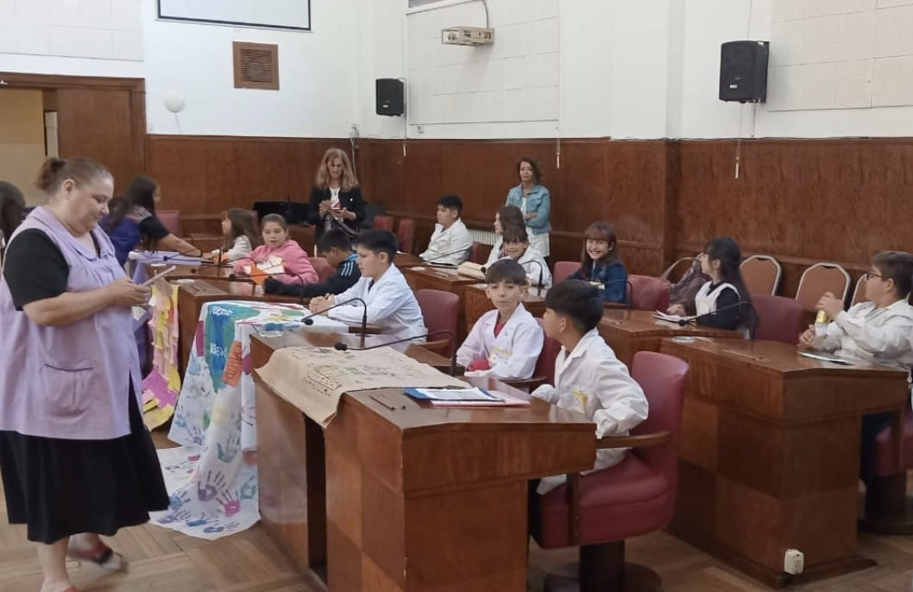

Violence can cause children to develop school-related problems. Cell phones and social media are contributing to violence in schools. School violence has become a digital crisis, especially because of cyberbullying. Parents need to be aware of their children’s behaviour and online activities. Preventing school violence is not only the responsibility of teachers but also for parents. Supervision and guidance should begin at home. A school should be a safe place where children can learn, grow, and feel protected. Thank you for reading our magazine. We hope these articles help you understand the importance of preventing school violence.
The purpose of this text is to raise awareness about school violence. This magazine is intended for families that need to monitor more their children.
Violence at school is increasing more and more. Parents need to be aware of their children’s behaviour and online activities. The most affected people are the students who suffer from violence. Cyberbullying, fights, and videos are shown on social media by youngsters. The causes of school violence might be: dislike for another person, revenge on peers, popularity among classmates and a desire for power and control over others.
The consequences of this issue are terrible for students, teachers and families. People should learn about this issue because it impacts negatively on everyone. Be careful with your children. They can be victims or bullies. Moreover, this text not only describes the problems but also the possible solutions. For instance, stricter phone policies, digital citizenship education, increased counseling or changes to social media platforms.
Students, teachers and families can prevent this issue by raising awareness not only in schools but also students’ homes. After reading this text, I hope you have a deep conversation and reflect about violence at schools with your children. If you are a parent or a teacher, the most important thing you can do is to raise awareness about technology, because it is the main tool related to this conflict.
In this magazine we will discuss the types of violence at schools: physical, verbal, psychological, emotional, social violence or more common cyberbullying. Violence is proven in a lot of studies. Violence at schools appears for a lot of reasons: family problems, peer pressure, emotional and behavioral problems or previous experiences of being bullied or exposed to violence.
Social media has a crucial role in students’ lives. The familiar or school environment affects students’ lives. Violence at school affects everyone. Some possible solutions for school violence are: Prevention of school violence, plan of studies related to the school violence and secure school environment.
Parents, school staff and other caring adults have a role to play in preventing bullying: help kids understand bullying, keep an open communication and encourage respect to others. Keep reading to learn more about school violence, its causes, its effects, and how we can work together to prevent it.
— The Editorial Team
Summary — Digital Conflict, Real Consequences
How social media and cellphones are fueling fights in U.S. schools.
Essay — Whose Job Is It?
Why fighting school violence means teaching emotional literacy.
Interview — Maite Campos
Violence in schools and the role of screens: a conversation with a primary and secondary school teacher.
Summary — Psychosocial & Academic Impact
How exposure to violence affects children's mental health, learning, and development.

The news article “How Cellphones and Social Media Are Fueling School Fights” by The New York Times examines how smartphones, social media platforms, and messaging apps are contributing to the rise of violent fights in U.S. schools. The article explains that technology has changed the way students communicate, interact with one another, and handle conflicts, making disagreements spread faster and reach a larger audience.
According to the article, cellphones do not directly cause violence, but they can intensify existing conflicts. Students frequently use social media to spread rumors, post offensive comments, argue online, organize fights, record violent incidents, and share the videos with others. This behavior increases bullying, public humiliation, and peer pressure, encouraging more students to participate in or watch these incidents instead of helping to stop them. As a result, violence can become normalized and have a negative impact on students’ emotional well-being, teachers’ ability to maintain discipline, and the overall school climate.
The article also discusses the different opinions about allowing cellphones in schools. While some people believe that phones are useful for communication and learning, others argue that they create distractions and contribute to conflicts. It emphasizes the importance of promoting responsible technology use and digital citizenship among students. In addition, it suggests several possible solutions, including stricter cellphone policies, stronger cooperation between schools and families, greater supervision of online behavior, and better access to counseling and mental health support for students.
Overall, the article concludes that technology itself is not the problem; rather, the way it is used can increase conflict and violence. By encouraging responsible digital behavior and creating supportive school environments, schools can help reduce violence and provide a safer, more respectful place for learning.
Reference: The New York Times. How Cellphones and Social Media Are Fueling School Fights. The New York Times.
Why Fighting School Violence Means Teaching Emotional Literacy
Today’s school violence is no longer just a physical hallway problem; it is a digital crisis fueled by relentless cyberbullying and online drama that spills into classrooms. While many advocate for heavier security or policing, a growing educational movement suggests a different fix: making emotional literacy and conflict resolution mandatory school subjects. This debate sits directly at the intersection of school’s duties and parent’s responsibilities. Ultimately, while mandatory emotional literacy classes could curb school violence by teaching students digital empathy that busy parents may overlook, critics argue that behavioral and online guidance belongs strictly at home.
On the one hand, experts argue that schools should implement these classes because traditional education systems fail to address the root causes of modern conflict. To begin with, emotional literacy has become a vital response to the digital age, where overworked parents simply cannot monitor their children’s smartphones twenty-four-seven. Since online cyberbullying and toxic group chats inevitably spill into school hallways, institutions must step in to teach “digital empathy,” helping students defuse internet drama before it escalates into physical altercations. Furthermore, this curriculum does not just prevent fights; it directly transforms the overall learning environment. When students are equipped to manage frustration and anxiety, classroom disruptions drop significantly, allowing teachers to focus on instruction rather than policing behavior, which ultimately drives up academic success.
On the other hand, critics argue that a child’s moral, emotional, and online behavior is strictly a parental responsibility, not a teacher’s. Opponents believe that since cyberbullying and social media drama take place on private devices outside of school hours, parents should be held accountable for monitoring their own children’s screens rather than expecting schools to police digital habits. Moreover, public schools are already facing an educational crisis with falling test scores, and forcing teachers to act as counselors takes precious time away from core academic subjects. Finally, analysts point out that extreme violent reactions are usually driven by deep-rooted psychological trauma, unstable home environments, or severe mental health crises. A standard classroom lecture on feelings cannot heal deep trauma or stop a student pushed to their absolute breaking point; these complex behavioral issues require professional, intensive therapy outside of the school system.
In conclusion, the battle against school violence highlights a deep divide over where a teacher’s job ends and specialized clinical or parental support begins. While schools have the unique potential to step in as a digital-age safety net, the reality of overstretched academic budgets, parental boundaries, and the complex psychological trauma that drives a student to a violent breaking point remain major roadblocks to these basic classroom programs. As stated by UNICEF, a school “should be a safe space for children to learn and grow.” Ultimately, achieving this ideal environment must raise awareness about the urgent need for a stronger partnership between the classroom and the living room, because neither overworked teachers, busy parents, nor basic school rules alone can fully heal the root causes of this modern crisis.
— by Author Name

Primary and secondary school teacher
A conversation with a school teacher of over a decade of experience, exploring one of the most pressing concerns in education today: the growing presence of violence in schools and its connection to the unrestricted use of screens among children and adolescents.
Have you noticed a significant increase in violence within schools over the last ten years?
Absolutely. The nature of conflicts has changed considerably — what used to be occasional, manageable disagreements has become more frequent and more intense. I have seen physical altercations that begin over something that happened online the night before.
Maite Campos, continued
Do you see a direct connection between the increasing use of technological devices and this rise in aggressive behaviour among students?
I do, without a doubt — though I want to be careful not to oversimplify. The issue lies not in technology itself, but in how it is being used, by whom, and for how long, with little or no supervision. Many students arrive at school having spent hours in front of screens — exhausted, irritable, and completely unable to concentrate. Their tolerance for frustration is remarkably low. When something does not go their way, the reaction is disproportionate.
What types of content do you consider most harmful, and how does exposure to it affect students’ behaviour in the classroom?
I am not against video games as a category. What concerns me is unrestricted access to violent or inappropriate content by children whose emotional development is still in progress. Violence stops being shocking. It becomes normalised, even entertaining — and that normalisation does not stay inside the screen.
Maite Campos, continued
What is your position on the use of devices during school hours?
My position is firm: devices should not be permitted during class time. The mere presence of a smartphone on a desk — even face down, even switched off — reduces a student’s capacity to focus. What I propose is a structured approach: devices are collected at the beginning of the school day and returned during break times. The classroom must be a protected space — one reserved for thinking, dialogue, and genuine human interaction.
How much does a student’s personal and family situation contribute to violent behaviour at school? Can the school address these deeper causes?
Screens do not exist in a vacuum. A child from a stable, emotionally supportive home is far less likely to be overwhelmed by what they consume online. The screen, in many cases, becomes a refuge — the one place where they feel in control. The school cannot replace the family, but it can provide a safe, consistent, and emotionally attentive environment.
Maite Campos, continued
What would you say to policymakers and parents who are still unsure about the urgency of this issue?
I would say: come and spend a week in a real classroom. See what teachers manage on a daily basis. We are not just teaching content anymore — we are managing emotional crises, mediating conflicts, and trying to reach children who are simultaneously present and completely elsewhere. Families need support in setting healthy boundaries around screen use at home. Schools need clear, enforceable policies regarding devices. Students need access to counselors and psychologists. And the technology industry needs to be held accountable — algorithms that push violent content towards children are not neutral. They are a choice, and that choice has consequences that teachers see every single day.

The article “Violence Exposure and the Development of School-Related Functioning: Mental Health, Neurocognition, and Learning,” written by Suzanne Perkins and Sandra Graham-Bermann, examines the profound impact that exposure to community and domestic violence has on the psychosocial and academic development of children and adolescents. While many individuals demonstrate resilience, exposure is a significant precursor to internalizing and externalizing mental health problems, with the severity often determined by the degree of exposure.
Exposure to violence at home or in the community more than doubles the risk of developing PTSD and depression. Sexual abuse is the strongest predictor of PTSD, especially for boys. Early and repeated exposure to violence affects children’s social development, increases behavioral problems, and reduces social competence.
Exposure to violence negatively affects children’s academic performance and cognitive development. Children who experience abuse or neglect are more likely to need special education and may develop emotional, learning, or cognitive difficulties. Violence is also associated with lower IQ, poorer reading skills, and problems with memory, attention, and vocabulary. Feeling safe and protected at home and at school can improve reading comprehension and support better academic outcomes.
The article explains that violence affects children’s brain and language development in two main ways. First, trauma can cause direct brain injuries or alter the brain’s ability to learn and process information. Second, children living in violent homes are often exposed to negative communication, including criticism, threats, and limited positive conversations. This lack of supportive language can slow cognitive and language development, making learning more difficult.
In conclusion, exposure to community and domestic violence acts as a critical predictor for both severe mental health challenges and significant academic impairment in children. By disrupting neurocognitive development and reducing exposure to quality linguistic environments, violence compromises a child’s fundamental ability to self-regulate and succeed academically.
“While resilience is possible, early intervention and the presence of protective environments are essential to mitigate these long-term risks.”